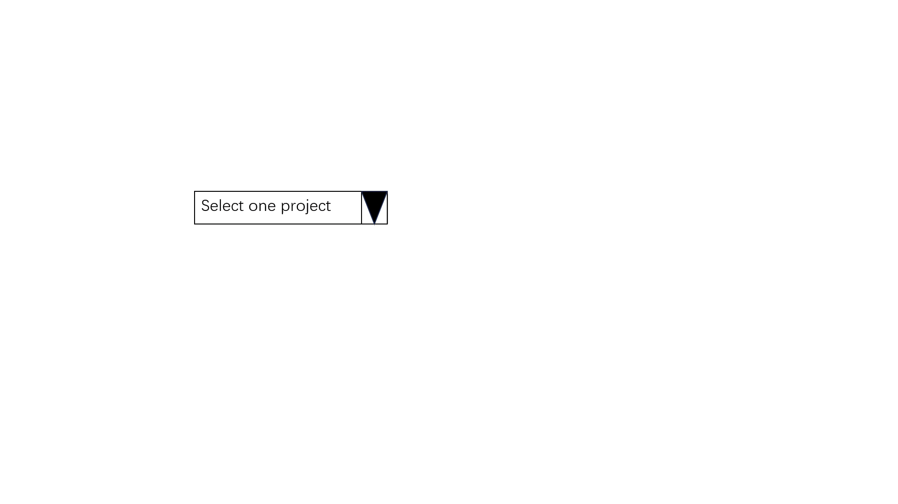

About us
Welcome to Dashboard of Commercial Involvement in OSS. Our platform is dedicated to providing valuable insights and data-driven analysis of corporate participation in open-source communities.
What We Do
Data Collection: We gather data from various open-source repositories, including the Linux Kernel on GitHub, as well as the website Linux Commits Search, to provide you with a comprehensive view of corporate contributions.
Charts and Analysis: Our platform offers a wide range of metrics and analytics tools, allowing you to explore how companies engage with open source.
Temporal Comparison: Analyze corporate contributions over time, enabling comparisons of the same company's involvement across different timeframes. Explore intersections between different companies or projects to gain a multifaceted perspective on the data.
How Do We Preprocess Data
-
Step 1
Select one project, here we choose Linux Kernel
-
Step 2
Download the original data from Github:
git show --name-only --pretty=format:"%H"
-
Step 3
Remove the bots
-
Step 4
Merge multiple accounts under one developer
-
Step 5
Order the data, divide them into three tables for web to read and show

Get Started
-
Mainpage
In the Mainpage, you can see a graph of the overall trend of company and individual participation in contributing to the open source community. You can hover over the chart to see the amount of contributions at specific points in time. At the same time, we show a few companies that have contributed the most in the last year. You can discover points of interest from the overview and go to other modules to explore them for a deeper understanding.
-
Contribution Model
The total number of contributions by all users is calculated over time, and contributions are separated into categories of volunteers and company contributions.
-
Comparation
Information for a selected company is retrieved for a specific year and module, including CI and CE, with CE representing the module's contribution proportion. Yearly contribution trends are also displayed.
-
Network Diagram
In the Network Diagram, you are presented with a network diagram showing which modules the company has contributed to. The blue nodes in the network diagram represent companies, the red nodes represent modules, and the edges represent relationships between companies and modules. The user can hover over the nodes to see which companies have contributed to the module, or which modules the company has contributed to.